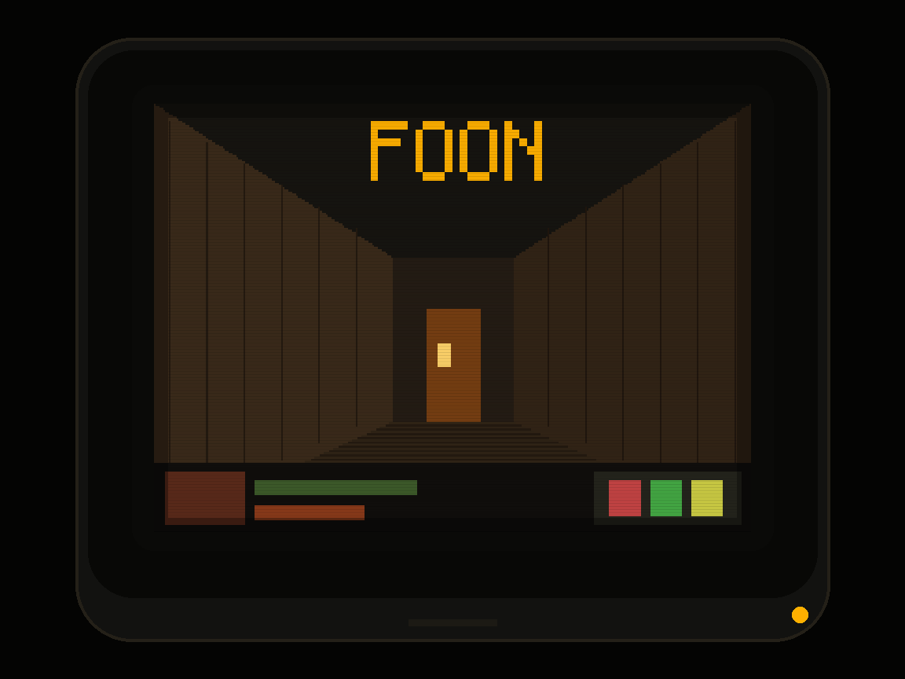
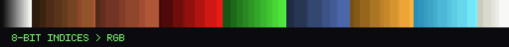

// SIGNAL 320×200 · PALETTED · USER IWAD
FOON
Classic Doom pixels in the browser. The 1997 Linux Doom software renderer, compiled C → WASM, then shown through a WebGL CRT compositor. You supply the IWAD. Commercial WADs are never committed or hosted.

What it is
FOON is a browser port of the 23 December 1997 Linux Doom 1.10
source (GPL-2.0). The game still thinks it is drawing an 8-bit
320×200 framebuffer. The page just hosts that buffer.
-
Engine
Original software renderer (
r_*.c) — source of every pixel -
Host
Emscripten / WebAssembly,
requestAnimationFrameloop -
Present
screens[0]+PLAYPAL→ GPU compositor - Data User-supplied IWAD only. No commercial WAD in this tree.

Pixel compositor
Indices stay on the CPU. RGB and effects happen after palette expand. That is how FOON keeps the original look — colormap lighting, fuzz, pain flashes — while adding a modern CRT stack.
- Upload 320×200 R8 indices + current PLAYPAL LUT
- Palette expand (nearest) → RGB
- Integer upscale, 4:3 present
- Optional bloom, CRT, color grade at display resolution
The compositor must not rewrite walls, floors, or sprites. Effects are a present pass, not a new renderer.

PLAYPAL
screens[0].IWAD policy
The engine will not start without a WAD you own (or a freely licensed IWAD). FOON never fetches, hosts, or commits commercial game data.
- Allowed A WAD you drop in from disk when Play ships
-
Forbidden
Bundling
doom.wad,doom2.wad, or any commercial IWAD in git or Pages - Why Source is GPL-2.0. Assets are not.
Roadmap
-
Site shell
This page — public IA and Pages deploy from
web/site/ -
Host skeleton
WASM boot, IWAD file picker, stub
I_* -
Visible pixels
Title / menu / E1M1 from
screens[0] - WebGL compositor LUT expand, integer scale, CRT toggles
- Audio + input Web Audio SFX, pointer lock, gamepad
Play
The in-browser play host is not in this drop. The control below is a placeholder so the public IA is complete before WASM lands.
NO CARTRIDGE · AWAITING WASM HOST
When it ships, Play will ask you to choose a local IWAD. Nothing will be uploaded to a server from this static site.
GitHub
Source, agents, and architecture notes live in the repository. The GitHub name may still read DOOM; the product is FOON.
GPL-2.0. Carmack’s original release note is still in
README.TXT. Port plan:
docs/linuxdoom-browser-port.md.